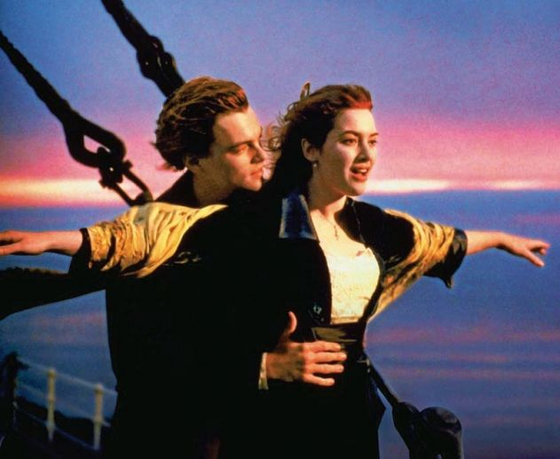
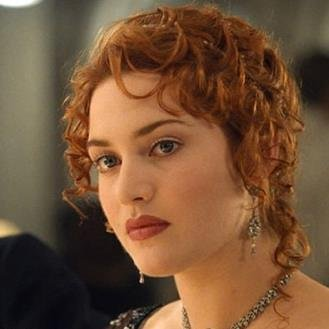
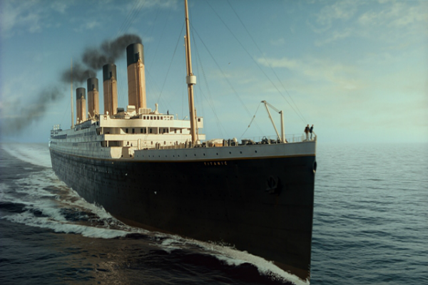

Titanic
Director:James Cameroon
Trailer:

Titanic
Director: James Cameroon
Duration: 150min
Genre:Drama
Country: USA
Music: James Hornern
SHOWING:
Time: 16:00Price: 300 RSD
Sava Centar
Plot:
The film's work begins in 1996 when a treasure hunter, Brok Lovet, along with his team roars deep into the Atlantic Ocean towards the Titanic wreck in search of a valuable diamond necklace. After they find a drawing of a young girl wearing a necklace and the same announcements in the safe, they will soon be given an old lady who claims that the girl is from the drawing. Through narration, old Rose returns viewers in 1912, in the port of Southampton, from where Titanic moves to his first trip. In addition to Rose, an unfortunate girlfriend confined to the social layers she lives in, we meet her mother, Ruth, and the fiancé Caledon Hokley, the son of a wealthy Pittsburgh tycoon, who will pay off all his debts to her dead father by roasting with Rose. At the same time, young supernatural Jack Dawson wins the Titanic ticket for poker and has recently boarded his ship with his friend Fabrizio. Jack and Rose meet when Rouz tries to kill himself, wanting to throw himself away from the stern of the ship. During a journey that lasts 4 days, the two of them develop a friendship that will turn into a true love romance after drafting Rose with a necklace given to her by fellow Caledonian at the beginning of the journey. On April 14, 1912, a few hours after Jack and Rouz experienced their most romantic moments, Titanic met with his own fate: a large iceberg in the middle of the Atlantic Ocean. Since the ship sails with full steam, it fails to circumvent the santu, and it strikes with an impact almost 20 meters away from the side. After all it becomes clear to everyone that an unbearable ship will sink to the bottom of the ocean, there will be a massive panic, and in all madness, Jack will be caught, Kaledon will try to kill both, and then save himself pretending to be the father of a poor girl, a band will continue to play. The ship then sinks, and Jack and Rose are saved by getting caught up in a wooden object. Jack is freezing in the meantime, and Rose promises that he will never give up. When the lifeboat lifeguard approached, Rose was shouting the last effort, but no one heard it. When the camac had started to leave Rose jumped off the wooden object on which he sat and sailed to one frozen officer, he took his whip and dunes into it, and the camac returned and picked it up. And so she survived. When Brok Lovett asked her about a diamond necklace, she said she probably stayed with Caledon. But the necklace remained in the pocket of the cloak that Kaledon gave her. Rose climbs on a ship carrying a submarine and throws a necklace into the Atlantic Ocean.|  |  |
 |
 |